<!DOCTYPE html>
<html lang="en">
<head>
    <meta charset="UTF-8">
    <meta name="viewport" content="width=device-width, initial-scale=1.0">
    <title>The Fencers Hall</title>
    <link rel="stylesheet" href="https://fonts.googleapis.com/css2?family=EB+Garamond:wght@400;700&display=swap">
    <link rel="stylesheet" href="stylecss.css"> <!-- Link to external CSS file -->
    <link rel="stylesheet" href="main.css"> <!-- Link to additional CSS file -->
</head>
<body style="background-image: url('images/backround2.jpg');"></body>
   <!-- Navbar -->
   <nav class="navbar">
    <div class="logo-container">
        
        <h1 class="site-name">The Fencers Hall</h1>
    </div>
    <div class="toggle-button" id="toggle-button">
        &#9776; 
    </div>
    <div class="nav-links" id="nav-links">
        <a href="index.html">Entrance</a>
        <a href="Lounge.html">Lounge</a>
        <a href="Video.html">Video Sources</a> 
        <a href="Text.html">Text Sources</a>
        <a href="aboutus.html">About Us</a>
        <a href="aboutme.html">Made By</a>
    </div>
</nav>
    
 <!-- Link to your CSS file -->
    <script src="nav.java"></script> 

         <!-- Hero Section -->
         <div class="hema-sources">
            <h2>Hema Text/PDF Sources</h2>
                <div class="category">
                    <h3 class="category-title" onclick="toggleCategory(this)">Saber's</h3>
                    <div class="video-list">
                        <div class="video-card">
                            <h4>Fencing Familiarised Thomas Mathewson transcription-</h4>
                            <p>Main Sabering</p>
                            <a href="c:\Users\Don R. Dy\Desktop\The Fencers Hall Project\Sources\Fencing-Familiarised-Thomas-Mathewson-transcription-Proofed.pdf" target="_blank">Read Source</a>
                        </div>
                        <div class="video-card">
                            <h4>Pringle Greens Instruction for training a ships crew in the use of arms in attack and defence</h4>
                            <p>Sub Sabering.</p>
                            <a href="c:\Users\Don R. Dy\Desktop\The Fencers Hall Project\Sources\Fencing-Familiarised-Thomas-Mathewson-transcription-Proofed.pdf" target="_blank">Read Source</a>
                        </div>
                    </div>
                </div>
                  <div class="category">    
                <h3 class="category-title" onclick="toggleCategory(this)">Rapier</h3>
                <div class="video-list">
                    <div class="video-card">
                        <h4>Rapier Workbook</h4>
                        <p>Fundamentals of the rapier</p>
                        <a href="c:\Users\Don R. Dy\Desktop\The Fencers Hall Project\Sources\Rapier-Workbook-v1.0.pdf" target="_blank">Read Source</a>
                    </div>
                    <div class="video-card">
                        <h4>Taylor</h4>
                        <p>Its Honor Guards and base guards</p>
                        <a href="c:\Users\Don R. Dy\Desktop\The Fencers Hall Project\Sources\AHF-workbook-Taylors-ten-lessons-Version-4.pdf" target="_blank">Read Source</a>
                    </div>
                </div>
            </div>
        </div>
    
                 <div class="video-sources">
        </div>
        <script src="collaps.js"></script>
        </div>

        <footer>
            <p>&copy; 2025 The Fencers Hall. All rights reserved.</p>
        </footer>
